扉页
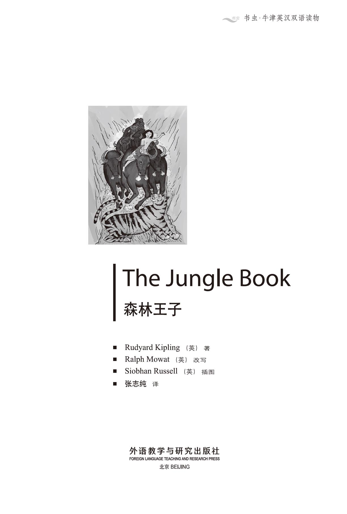
版权页
京权图字 01-2006-3285
Originally published by Oxford University Press, Great Clarendon Street, Oxford. © 2000
This edition is licensed for sale in the People's Republic of China only and not for export therefrom.
'Oxford' is a registered trademark of Oxford University Press.
只限中华人民共和国境内销售，不包括香港特别行政区、澳门特别行政区及台湾省。不得出口。
图书在版编目（CIP）数据
森林王子：英汉对照／（英）吉卜林（Kipling, R.）著；（英）莫厄特（Mowat, R.）改写；张志纯译．—北京：外语教学与研究出版社，2006.6（2014.12 重印）
（书虫·牛津英汉双语读物）
ISBN 978-7-5600-5529-9
Ⅰ．森… Ⅱ．①吉…②莫…③张… Ⅲ．①英语—汉语—对照读物②儿童故事—作品集—英国—现代 Ⅳ．H319.4：I
中国版本图书馆CIP数据核字（2013）第228554号
出版人： 蔡剑峰
责任编辑：田 娜
封面设计：孙莉明
出版发行：外语教学与研究出版社
社 址：北京市西三环北路19号（100089）
网 址：http://www.fltrp.com
版 次：2006年6月第1版
书 号：ISBN 978-7-5600-5529-9
* * *
凡侵权、盗版书籍线索，请联系我社法律事务部
举报电话：（010）88817519 电子邮箱：banquan@fltrp.com
法律顾问：立方律师事务所 刘旭东律师
中咨律师事务所 殷 斌律师
内容简介
内容简介
在印度南部的群山之中，一个人类的婴儿躺在山洞里，又温暖又安全。他挤在小狼崽们中间，旁边卧着狼妈妈，可是他一点儿也不害怕。洞穴外，食人虎希尔汗正愤怒地咆哮着，想要杀死那个婴儿。“没门儿！”狼妈妈说道，“这个人崽儿是我的，他会活下去，和狼群一起奔跑，并且成为我的儿子。我要叫他莫格利。”
许多年过去了，那个人崽儿莫格利和小狼们一起成长起来。在他的老师老棕熊巴鲁和黑豹巴格拉的教导下，他懂得了“森林法则”。在森林中他屡入险境，可也交到了不少动物朋友。
当然他还有个敌人。食人虎希尔汗对他耿耿于怀。老虎在等待机会，期待着有一天能够抓住这个人崽儿，然后杀死他。
THE JUNGLE BOOK
THE JUNGLE BOOK
In the hills of Southern India a baby lies warm and safe in a cave. He lies among wolf-cubs, next to Mother Wolf's side, and he is not afraid. Outside the cave Shere Khan, the man-eating tiger, roars angrily, wanting to kill. 'No!' says Mother Wolf. 'The man's cub belongs to me. He will live, to run with the other wolves, to be my son. And I will call him Mowgli.'
The years pass, and Mowgli the man's cub grows up with the wolves. He learns the Law of the Jungle from his teachers, Baloo the old brown bear and Bagheera the black panther. He has many adventures, and many friends among the animals of the jungle.
But he still has an enemy. Shere Khan the tiger has not forgotten. He waits for the day when he can catch the man's cub — and kill him.
目录
1 Mowgli's brothers
1
Mowgli's brothers
One very warm evening in the Seeonee hills in Southern India, Father Wolf woke up from his day's rest. Next to him lay Mother Wolf, with their four cubs beside her.
'It's time to look for food,' said Father Wolf, and he stood up to leave the cave.
'Good luck,' said a voice. It was the jackal, Tabaqui, who eats everything and anything, even pieces of old clothes from the villages. The wolves of India do not like him, because he runs around making trouble and telling bad stories about them.
'Shere Khan, the tiger, is coming to look for food here,' said Tabaqui.
'He can't,' cried Father Wolf. 'By the Law of the Jungle he must tell us first, before he comes here to hunt.'
'Shere Khan has a bad leg, so he can kill only cows. In the village near him the people are angry. That is why he is coming here — to start hunting in a new place. Listen, you can hear him now,' said Tabaqui.
'He is a stupid animal,' said Father Wolf, and he listened to the angry noise of a tiger who has not eaten. 'No one will find anything to eat in the jungle now.'
'But Shere Khan is hunting man, not animal, tonight,' said Tabaqui.
The Law of the Jungle says that animals must not hunt man, because man-killing brings men with guns. Then everybody in the jungle is in danger.
Father and Mother Wolf listened to Shere Khan in the jungle not far away. Then, suddenly, they heard a noise much nearer to them.
'It's a man. A man's cub. Look!' said Father Wolf.
And there in front of them stood a baby who could just walk. He looked up at Father Wolf and laughed.
'Is that a man's cub?' asked Mother Wolf. 'I have never seen one. Bring it here.'
The baby, small and with no clothes, pushed its way between the cubs to get near to Mother Wolf. 'Look,' she said, 'he is taking his meal with the others.'
'I have heard that this has happened before,' said Father Wolf, 'but I have never seen it until now. Look at him. He is not afraid.'
Suddenly, it was dark, and Shere Khan was pushing his great head in through the mouth of the cave.
'We are pleased that you visit us, Shere Khan,' said Father Wolf, but his eyes were angry. 'What do you need?'
'I am hunting a man's cub,' said Shere Khan. 'Its father and mother have run away. Give it to me.'
Father Wolf knew that Shere Khan could not get inside the cave because he was too big.
'The man's cub belongs to us,' he said. 'The Pack — the other wolves and I — will decide. If we want to kill him, we will kill him, not you.'
'The man's cub belongs to me! It is I, Shere Khan, who speaks!' And Shere Khan's roar filled the cave with noise.
'No!' came the angry voice of Mother Wolf. 'The man's cub belongs to me! We will not kill him. He will live, to run with the other wolves, to be my son. Now go away, fish-killer, eater of cubs! Go!'
Shere Khan went. He knew that he could not fight Mother Wolf in the cave. 'But I will have this man-cub one day, you thieves!' he shouted from the jungle.
'Do you really want to keep him, Mother?' said Father Wolf.
'Keep him?' said Mother Wolf. 'Yes. He came here by night, alone and hungry, but he was not afraid. Yes, I will keep him. And I will call him Mowgli, the frog.'
'But what will the other wolves of the Pack say?'
By the Law of the Jungle all wolf-cubs must come to the Pack when they can walk. The wolves look at the cubs carefully. Then the cubs are free to run anywhere because all the adult wolves know them and will not attack them.
* * *
When the four wolf-cubs could run a little, Father Wolf took them and Mowgli and Mother Wolf to the Meeting Rock. Here, the hundred wolves of the Wolf-Pack met every month when the moon was full.
The leader of the Pack was Akela, a great grey wolf. Each new wolf-cub came to stand in front of him and Akela said, 'Look well, O Wolves. Look well!'
At the end, Father Wolf pushed Mowgli into the circle of wolves. Then from the trees outside the circle they heard the voice of Shere Khan.
'The man-cub belongs to me. Give him to me!'
Akela did not move but said only, 'Look well! Who speaks for this man-cub? Two voices, who are not his father and mother, must speak for him.'
There is only one other animal who can come to these wolf-meetings — Baloo, the sleepy brown bear. His job is to teach the Law of the Jungle to the wolf-cubs.
'I speak for the man-cub,' came Baloo's deep voice. 'Let him run with the Pack. I myself will teach him.'
'We need another voice to speak for him,' said Akela.
Silently, another animal jumped down into the circle. It was Bagheera the panther, black as the night, clever, strong, and dangerous.
'O Akela, will you let me speak?' said Bagheera softly. 'The Law of the Jungle says it is possible to buy the life of a cub. It is bad to kill a man-cub. He cannot hurt you. Let him live with you, and I will give you a fat cow, newly killed, which lies in the jungle not far away.'
The voices of the wolves replied, 'Let him live.' They were always hungry and they wanted to get the dead cow. Soon they went away, and there were only Akela, Bagheera, Baloo, and Mowgli's wolf family left. They could hear the angry roars of Shere Khan in the night.
'It is good,' said Akela. 'Men are clever. Perhaps this man-cub will help us when he is older. Take him away,' he said to Father Wolf, 'and teach him well.'
And so, because of Baloo's good word and the present of a cow, Mowgli now belonged to the Seeonee Wolf-Pack.
* * *
The story of Mowgli's life among the wolves fills many books, but we must jump ten or eleven years now. Father Wolf, Baloo, and Bagheera taught Mowgli well, and he learnt everything about the jungle. He knew the meaning of every sound in the trees, of every song of the birds, of every splash in the water. He learnt to climb trees like a monkey, to swim in the rivers like a fish, and to hunt for his food as cleverly as any animal in the jungle.
cub n. a young lion, bear etc. 幼兽
jackal n. a wild animal like a dog that lives in Asia and Africa and eats the remaining parts of dead animals（亚洲和非洲的）豺；胡狼
pack n. a group of wild animals that hunt together（野兽的）一群
speak for to speak in support of someone 替……说话
panther n. a black leopard 黑豹
splash n. the sound of a liquid hitting something or being moved around quickly（液体的）溅泼声；洒落声
莫格利的兄弟们
1．莫格利的兄弟们
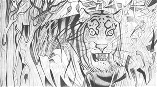
温暖的夜色笼罩着印度南部的西奥尼群山。休憩了一天的狼爸爸醒了过来。他的身边躺着狼妈妈，还有四只小狼崽。
“该出去找点儿吃的了。”狼爸爸说道。他站起身，准备离开洞穴。
“祝你好运。”一个声音说道。是豺狼塔巴奎，一个什么都吃的家伙，连从村子里找到的旧衣裳碎片也不放过。印度的狼群都不喜欢他，因为他到处乱窜，制造麻烦，还老是讲他们的坏话。
“老虎希尔汗就要到这里来觅食了。”塔巴奎说道。
“岂有此理，”狼爸爸叫道，“按照‘森林法则’，他在来这里捕猎之前，必须提前通知我们。”
“希尔汗的一条腿不好使，只能抓牛来吃。附近的村民气坏了。所以他就到这里来了——换个新地方开始捕猎。听，他来了。”塔巴奎说道。
“这个愚蠢的家伙，”听着饥饿的老虎愤怒的吼叫声，狼爸爸说道，“这下子再也没有谁能在森林里找到吃的了。”
“可是希尔汗今晚是来吃人的，不是吃动物。”塔巴奎说道。
根据“森林法则”，动物是不可以猎杀人的，因为一旦有人被杀，人们就会带着枪来到这里。这样一来，森林里所有的动物都会陷入危险之中。
狼爸爸和狼妈妈听着不远处的丛林中希尔汗的动静。突然，他们听到从更近的地方传来一个声音。
“是人，一个人崽儿。看！”狼爸爸叫道。
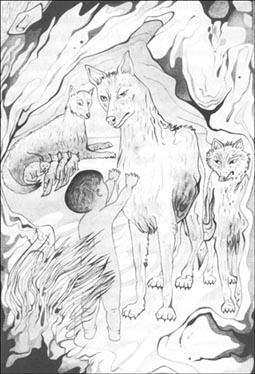
他们面前站着一个刚学会走路的婴儿。他抬起头，看着狼爸爸，然后笑了。
“那就是人崽儿吗？”狼妈妈说道，“我还从来没见过呢，快把他带过来。”
孩子个头很小，身上也没有穿衣服。他在狼崽们之间挤出一条路来，想走到狼妈妈的身边。“看，”她说，“他和其他孩子一样来吃奶了。”
“我听说以前曾发生过这样的事，”狼爸爸说道，“但是我直到今天才亲眼看到。你瞧，他一点儿都不害怕。”
突然，洞里暗了下来，原来是希尔汗的大脑袋从洞口挤了进来。
“欢迎来访，希尔汗，”狼爸爸嘴上说道，眼中却透出一股怒气，“有何贵干？”
“我正在抓一个人崽儿。”希尔汗回答道，“他的父母已经逃走了。把他给我。”
狼爸爸知道希尔汗没法钻进洞来，因为他的个头太大。
“这个人崽儿是我们的，”他说，“怎么处置他，我和其他狼自有主张。如果我们想杀死他，我们就会杀了他，而不是由你来决定。”
“这个人崽儿是我的！应该由我希尔汗说了算！”整个山洞都回荡着希尔汗的怒吼声。
“没门儿！”狼妈妈发出了愤怒的叫声，“这个人崽儿是我的。我们不会杀死他。他会活下去，和狼群一起奔跑，并且成为我的儿子。滚开，你这个只敢抓鱼和小孩吃的家伙，滚！”
希尔汗离开了，自知自己无法在洞穴里和母狼争斗。“总有一天我会抓到这个人崽儿的，你们这些小偷！”森林中传来了他的吼声。
“你真的想留下他吗，孩子他妈？”狼爸爸问道。
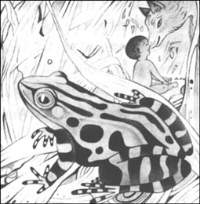
“留下他？”狼妈妈回答道，“当然。他晚上一个人来到这里，还饿着肚子，可是他一点儿都不害怕。是的，我要留下他。我还要给他取个名字，就用那只青蛙的名字，叫莫格利。”
“但是狼族里的其他狼会怎么说？”
根据“森林法则”，狼崽们学会走路以后，他们都必须来到狼族里所有狼的面前。群狼会仔细端详这些狼崽。然后，狼崽们就可以四处奔跑了，因为所有的成年狼已经认识了他们，不会再攻击他们了。
* * *
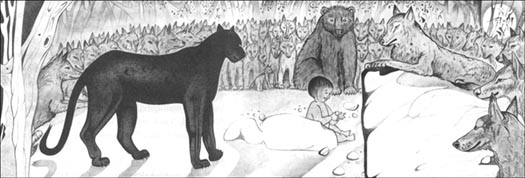
四只狼崽会跑以后，狼爸爸带着他们和莫格利跟狼妈妈一起来到了聚会石边。每逢月圆，狼族数以百计的狼都会在这里举行一次聚会。
狼族的首领是一只名叫阿克拉的大灰狼。一只只新露面的幼狼纷纷走到了他的面前，阿拉克说着：“大家看仔细！看仔细点！”
最后，狼爸爸将莫格利推到了狼群中间。就在这时，狼群围成的圈子外面的树林里传来了希尔汗的声音。
“这个人类的孩子是我的，把他还给我！”
阿克拉没有动，只是说道：“看仔细点！谁愿意为这个人类的婴儿说情？必须有他父母之外的两个人为他说情。”
狼群的聚会只允许除了狼之外的一个动物参加，那就是每天都昏昏欲睡的棕熊巴鲁。他的任务就是教幼狼们学会“森林法则”。
“我来替这个人类的孩子说说情，”巴鲁用他那低沉的声音说道，“让他和狼族待在一起吧，我来负责教导他。”
“我们还需要一个人来替他说情。”阿克拉说道。
另一只动物无声无息地跃到了狼群中间，原来是黑豹巴格拉。他全身漆黑，聪明、强壮而危险。
“噢，阿克拉，你愿意让我说上两句吗？”巴格拉轻声说道，“‘森林法则’说可以交换下一个小崽儿的性命。杀掉人崽儿没什么好果子吃。他伤害不了你们，所以让他和你们一起生活吧。我愿意给你们一头刚刚杀死的肥牛，就在不远处的林子里。”
狼群回答道：“让他留下来吧。”他们总是饥肠辘辘，所以对那头死牛很感兴趣。很快他们便四下散去，只剩下阿克拉、巴格拉、巴鲁以及莫格利一家。夜色中能听到希尔汗发出阵阵怒吼。
“很好，”阿克拉说道，“人类很聪明，说不定这个孩子长大以后还可以帮助我们。把他带走吧，”他对狼爸爸说，“好好教导他。”
就这样，由于巴鲁的美言加上牛的功劳，莫格利成为了西奥尼山上狼族的一员。
* * *
有关莫格利在狼群中的故事能够写上好几本书，但是现在我们必须跳过十来年。狼爸爸、巴鲁和巴格拉悉心教导莫格利，让他学会了有关森林的一切事情。对于林间的每一种声音，鸟儿的每一支歌以及水中的每一次水花飞溅，他都知道其中的含义。他学会了像猴子一样爬树，像鱼儿一样在河里游泳，以及像任何动物一样在林中敏捷地捕猎。
2 The Monkey-People
2
The Monkey-People
Baloo, the old brown bear, loved teaching Mowgli. He taught him how to speak to the different Jungle-People, and he taught him the important Master-Words. But Mowgli sometimes got bored with all the lessons. One day, when he was not listening, Baloo hit him, very softly, on the head, and Mowgli ran away angrily.
Bagheera, the black panther, was not happy about this. 'Remember how small he is,' he said to Baloo. 'How can his little head hold all your long words?'
'These words will keep him safe from the birds, from the Snake-People, and all the animals that hunt,' said Baloo. 'It is true that he is only small. But no one will hurt him, if he remembers all the Master-Words. Come, Mowgli!' he called into the trees. 'Come and say the words again.'
Mowgli climbed down from a tree and came to sit next to them. 'I will say the words to Bagheera, not you, fat old Baloo!' he said crossly.
'Very well,' said Baloo sadly. 'Say the words for the Hunting-People.'
'We are of one blood, you and I,' said Mowgli.
'Good. Now for the birds.'
Mowgli said the same words but with the sound of a bird.
'Now for the Snake-People,' said Baloo.
Mowgli then made the long 'ssss' sound, which was like no other noise, only the noise of a snake.
'Good,' said Baloo gently. 'One day you will thank me for my lessons. Now you will be safe in the jungle, because no snake, no bird, no animal will hurt you. You do not need to be afraid of anyone.'
'And I shall have my people and go with them high up in the trees,' shouted Mowgli.
'What did you say, Mowgli?' asked Baloo, surprised. 'Have you been with the Bandar-log, the Monkey-People?'
Mowgli could hear that Baloo was angry, and he saw too that Bagheera's green eyes were cold and hard.
'When Baloo hurt my head,' said Mowgli, 'I went away, and the grey monkeys came down from the trees and talked to me. They were kind to me and gave me nice things to eat. Then they took me up into the trees. They said that I was their brother, and they wanted me to be their leader one day. Why have you never told me about the Monkey-People? Bad old Baloo! They play all day and don't do lessons, and I will play with them again.'
'Listen, man-cub,' said Baloo angrily. 'I have taught you the Law for all the Jungle-People, but not for the Monkey-People. They have no law. Their ways are not our ways. They are noisy and dirty, and they think that they are a great people, but then they forget everything. The rest of the Jungle-People do not talk to them, or even think about them. Remember what I tell you.'
Mowgli listened, and was sorry. But all this time the Bandar-log were above them in the trees, listening and watching. They followed Mowgli and his friends through the jungle until it was time for the midday rest. Mowgli lay between his friends and went to sleep, saying, 'I will never talk to or play with the Monkey-People again.'
When he woke up, he was high in a tree and there were hands holding his legs and arms — hard, strong, little hands. Down below Baloo was shouting angrily, and Bagheera was trying to climb up the tree, but he was too heavy for the thin branches. The monkeys, shouting and laughing, carried Mowgli between them and began their journey along the monkey roads, which are high in the trees.
It was a wild, exciting journey. The monkeys jumped from treetop to treetop, crashing through the leaves and branches. At first Mowgli was afraid of falling, but then he began to think. He must tell Baloo and Bagheera where he was. High up in the blue sky he saw Chil the kite. The big bird saw that the monkeys were carrying a man-cub. He flew down to look, and was surprised to hear the birdcall of the kites: 'We are of one blood, you and I!'
'Who are you?' called Chil.
'Mowgli, the man-cub!' came the reply. 'Watch where they take me, and tell Baloo and Bagheera.'
'I will,' called Chil, and he flew high above the trees and watched with his far-seeing eyes.
Monkeys can travel fast when they want to, and by now Baloo and Bagheera were a long way behind.
'We cannot follow the Bandar-log through the trees,' said Baloo, 'and we will never catch them. But they are afraid of Kaa, the big python. He can climb as easily as the monkeys, and he eats them. Perhaps he will help us.' And so Baloo and Bagheera went to look for Kaa the python.
They found him, lying in the sun — ten metres of brown-and-yellow snake, beautiful and dangerous.
'What news?' called Kaa when he saw them.
'We are looking for food,' said Baloo. He knew that you must not hurry Kaa. He is too big.
'Let me come with you,' said Kaa hungrily. 'I have not eaten for days.'
'We are following the Bandar-log,' said Baloo. 'Those noisy, dirty thieves have stolen our man-cub. And we love our man-cub very much, Kaa!'
'The Bandar-log,' said Bagheera cleverly, 'are very much afraid of you, Kaa. But they say bad things about you, and call you "old yellow fish", I hear.'
'Tss! Tss!' said Kaa. 'I will teach them not to call me bad names. Where did they take your man-cub? They will be tired of him quickly, and that is bad for him. '
'Up! Up! Look up, Baloo!'
Baloo looked up and saw Chil the kite, high in the sky.
'What is it?' called Baloo.
'I have seen Mowgli the man-cub with the Bandar-log. He knew the Master-Word. They have taken him to the monkey-city, the Lost City.'
Baloo and Bagheera knew of the monkey-city. Men lived there once, but they left hundreds of years ago. Nobody went there now, only the Bandar-log.
'We must leave at once,' said Bagheera. 'It is a long way.'
'I will come as fast as I can,' said Baloo, 'but you and Kaa can go faster. I will follow you.'
* * *
The Lost City was very old. There were many beautiful buildings, but the walls were broken and full of holes, and there were tall trees in houses that were now open to the sky. The Monkey-People called the place their city, and ran around everywhere, in and out of the empty houses, up and down the fruit trees in the old gardens.
Now Mowgli was in their city, and the Monkey-People were very pleased with themselves. 'This boy can help us,' they said. 'He can teach us how to make things, because men are clever with their hands.' But monkeys make many plans, and always forget them five minutes later.
When Mowgli arrived in the city, he was tired and hungry. 'Bring me food,' he said, and twenty or thirty monkeys ran to bring him fruit. But they started fighting and forgot to take any fruit back to Mowgli.
Mowgli knew that he was in a bad place. 'Baloo was right,' he thought. 'The Bandar-log have no Law and their ways are not our ways. I must try to get away. Baloo will surely be angry with me, but that is better than life with the Bandar-log.'
But when Mowgli went to the walls of the city, the monkeys pulled him back. 'You are very happy here with us. We are great. We are wonderful. We all say so, and so it is true,' they shouted.
'Don't they ever sleep?' thought Mowgli. He looked up at the sky. 'There's a cloud coming over the moon. Perhaps I can run away when it's dark. But I am tired.'
bored adj. tired and impatient because you do not think something. is interesting 厌烦的；不感兴趣的
crossly adv. angrily or being annoyed 生气地；恼怒地
leader n. the person who directs or controls a team, organization, country etc. 领导者；领袖
midday n. the middle of the day, twelve o'clock 中午；正午
kite n. a type of hawk 鸢
crash v. to hit something or someone extremely hard while you are moving causing a lot of damage, or making a lot of noise（哗啦啦地）猛撞；猛击
far-seeing adj. able to see what happens in the distance 视力极好的；远视的
python n. a large tropical snake that kills animals for food by winding itself around them and crushing them（热带地区的）大蟒
wonderful adj. making you admire someone or something very much（某人、某物）令人惊叹的；奇妙的
猴群
2．猴群
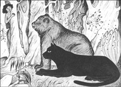
老棕熊巴鲁喜欢教导莫格利。他教莫格利如何与森林里不同的动物交谈，还教给他非常重要的口令。但是莫格利有时候会对这些课程感到厌倦。有一天，他没有认真听讲，巴鲁在他的头上轻轻敲了一下，莫格利生气地跑开了。
黑豹巴格拉对这件事感到很不高兴。“别忘了他的个头那么小，”他对巴鲁说道，“他那颗小脑袋怎么可能装得下你所有的长篇大论？”
“这些话可以让他免遭鸟儿、蛇以及所有捕猎动物的袭击，”巴鲁回答道，“他的确还小，可是如果他能记住所有的口令，就没有谁能伤害他了。快回来，莫格利！”他朝着树林里喊道，“快回来把那些话再说一遍。”
莫格利从一棵树上爬下来，坐到了他们的身旁。“我会把那些话背给巴格拉听，而不是你，又胖又老的巴鲁！”他生气地说道。
“好吧，”巴鲁伤心地说，“看到狩猎的人该怎么说？”
“你和我血脉相通。”莫格利回答道。
“很好。现在说说看到鸟儿该怎么说？”
莫格利把刚才的话重复了一遍，不过这次用的是鸟儿的声音。
“现在说说看到蛇族该怎么说？”
莫格利发出一阵长长的“嘶嘶”声，和蛇的声音一模一样。
“很好，”巴鲁温和地说道，“总有一天你会感谢我教给你这些课程的。现在你在森林里安全了，因为没有蛇、鸟儿或是任何动物会伤害你了。你不用再害怕任何动物。”
“那么我将拥有我的兄弟，还会和他们一块儿爬到高高的树上。”莫格利叫道。
“你说什么，莫格利？”巴鲁吃惊地问道，“你曾经和班达洛，就是那群猴子待在一起吗？”
莫格利听得出巴鲁很生气，他还发现巴格拉绿色的眼睛中闪烁出冷酷的光芒。
“巴鲁敲了我的脑袋，”莫格利说道，“所以我就逃走了。那群灰猴子跳下树来，和我说话。他们对我很好，还给我好吃的东西。接着他们把我带到树上。他们说我是他们的兄弟，希望将来我能成为他们的头领。为什么你从没告诉过我有关猴群的事，你这个又老又坏的巴鲁？他们整天玩耍，也不用上课，我还要和他们去玩。”
“听着，你这个人类的小家伙，”巴鲁生气地说，“我教给了你对付所有森林动物的法则，但是没有教你怎么对付猴群。对于他们毫无法则可言。他们和我们的方式不同。他们总是叽叽喳喳，而且很脏。他们自以为很了不起，但很快又把一切抛到脑后。森林里的其他动物都不和他们说话，甚至都不会想到他们。记住我对你说的话。”
莫格利听着，觉得有些愧疚。然而那群猴子此时正藏在他们头顶上的树丛里，偷听他们谈话，偷偷观察着他们。他们尾随着莫格利和他的朋友们在森林里穿行，直至中午休息时分。莫格利躺在他的朋友中间沉沉睡去，在梦中，他喃喃自语：“我再也不和那群猴子说话，再也不跟他们玩了。”
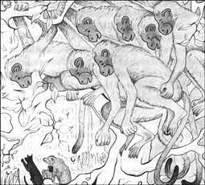
当他醒来的时候，他已在高高的树上，许多只手托着他的腿和胳膊——那是一些强劲有力的小手。巴鲁在树下愤怒地吼叫着，巴格拉想要爬树，但是他太沉了，那些细枝无法承受他的重量。猴子们又笑又叫。他们抬着莫格利，沿着猴子们常走的路线，在高高的树上开始了他们的旅程。
这次旅行疯狂而又刺激。猴子们在树梢上跳来跳去，压得树叶和树枝噼啪作响。起初莫格利还有些担心自己会掉下去，但不一会儿他就开始想办法。他觉得必须告诉巴鲁和巴格拉自己在哪儿。他看到那只名叫奇尔的鸢正在高高的蓝天上飞翔。这只大鸟看到猴子们抬着一个人类的小孩。他飞了下来，想看个究竟。突然，一阵鸢的叫声传入他的耳朵：“你和我血脉相通！”他不禁吃了一惊。
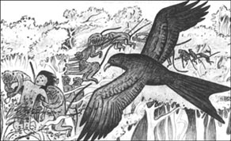
“你是谁？”奇尔喊道。
“莫格利，就是那个人类的小孩！”莫格利回答道，“看看他们把我带到哪儿了，然后告诉巴鲁和巴格拉。”
“我会的。”奇尔叫道，接着他飞到森林上空，用那双犀利的眼睛观察着动静。
因为猴子们可以随心所欲地快速前进，现在巴鲁和巴格拉已经被他们远远地抛在了后面。
“那些班达洛在树上钻来钻去，我们跟不上，”巴鲁说道，“我们永远也追不上他们。不过他们害怕大蟒蛇卡阿。他爬树的本领和猴子们不相上下，而且他还吃猴子。也许他会帮助我们。”于是，巴鲁和巴格拉去找蟒蛇卡阿了。
他们找到卡阿的时候，他正躺着晒太阳。卡阿是一条身长十米、棕黄相间的大蛇，既美丽又危险。
“有事吗？”卡阿看到他们问道。
“我们正在觅食。”巴鲁说。他知道不能催促卡阿，他实在是太大了。
“让我一起去吧，”卡阿饥肠碌碌地说，“我已经好些天没有吃过东西了。”
“我们正在追踪班达洛，”巴鲁说，“那群又闹腾又肮脏的小偷把我们那个人类的小孩偷走了。我们非常爱那孩子，卡阿！”
“班达洛非常害怕您，卡阿！”巴格拉机灵地接着说道，“但是他们经常说您的坏话，我听到他们说您是‘老黄鱼’。”
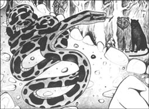
“嘶！嘶！”卡阿说道，“我要给他们点颜色看看，看他们还敢不敢骂我。他们把你们的小孩带到哪里去了？他们很快就会对他失去兴趣，这样一来他的情况就会很不妙。”
“上面！上面！快看上面，巴鲁！”
巴鲁抬起头，看见那只名叫奇尔的鸢正在高空中盘旋。
“发生了什么？”巴鲁叫道。
“我看见那个名叫莫格利的人类的孩子了，他和班达洛在一起。他知道口令。他们已经把他带到猴城，也就是‘失落之城’去了。”
巴鲁和巴格拉听说过猴城。人类曾经在那里居住过，但是他们在几百年前就离开了。现在除了班达洛已经没有谁去那里了。
“我们必须马上出发，”巴格拉说道，“要走好长一段路呢。”
“我会尽快赶来，”巴鲁说，“但是你和卡阿可以走快些，我会跟着你们。”
* * *
“失落之城”非常古老。城里有很多美丽的建筑，不过墙壁都已经破败不堪，千疮百孔。房子里长着参天的树木，屋顶都没了。猴群称这里为他们的城市，在里面跑来跑去。他们在空屋子里窜进窜出，在那些古老的花园里的果树上跳上跳下。
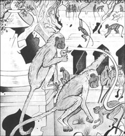
莫格利现在就在这座城里，猴子们个个沾沾自喜：“这孩子可以帮助我们，”他们说道，“他可以教我们怎么制作东西，因为人类的双手很灵巧。”不过猴子们虽然有很多计划，可总是在五分钟后就忘个精光。
莫格利到达猴城的时候又累又饿。“给我拿点吃的。”他说道。二三十只猴子跑去给他拿水果，但是他们很快就开始打打闹闹，忘记带水果给莫格利了。
莫格利知道自己的处境很糟。“巴鲁是对的。”他想，“班达洛毫无法则可言。他们和我们的方式不同。我必须试着逃走。巴鲁肯定对我很生气，但是那总比和班达洛一起生活要好。”
然而当莫格利走到城墙边时，猴子们把他拉了回去。“和我们待在一起，你在这里会过得很开心的。我们是很了不起、很出色的。我们都这么说，所以这就是真理。”他们叫嚷着。
“难道他们从不睡觉吗？”莫格利想着。他抬头望着天空：“有一片云彩就要遮住月亮了。也许我能趁着黑暗跑掉，可是我觉得好累。”
3 Kaa's hunting
3
Kaa's hunting
Bagheera and Kaa were also watching that cloud. They were now outside the city walls, but they knew they had to be careful. There were only two of them, and there were hundreds of monkeys.
'They are over there by that house, talking about the boy,' said Bagheera. 'When the cloud hides the moon, I will attack them.'
'I will go to the higher ground at the west wall,' Kaa said, 'and come down the hill very fast. Good hunting!'
The black panther ran quickly to the crowds of monkeys and started hitting, right and left, as hard as he could. The monkeys screamed angrily, but then one of them shouted, 'There is only one here! Kill him! Kill!' And a crowd of monkeys jumped on Bagheera, biting and pulling. Another group pulled Mowgli up a wall and pushed him over. He fell down into a dark room which had no doors or windows, and he could not get out. 'Stay there,' shouted the monkeys, 'until we have killed your friend. And then we will play with you, if the snakes leave you alive.'
Mowgli heard hissing sounds in the darkness around him. 'We are of one blood, you and I,' he said, quickly giving the Snakes' Call.
'Sssss,' the snakes replied. 'We will not bite you, but stand still, Little Brother, because your feet can hurt us.'
Mowgli stood very still and listened to the fight around Bagheera. For the first time ever, the big panther was fighting for his life. Then Mowgli remembered something. There was a big tank of water near one of the buildings.
'Go to the tank, Bagheera! Get to the water!'
Bagheera heard and he knew that Mowgli was safe. Suddenly he felt stronger and he pulled himself slowly to the tank, fighting against the crowds of monkeys.
Then Baloo came running in from the jungle, shouting, 'Bagheera, I am here!' At once the monkeys jumped on him, and the bear started to hit them with his great strong arms. Mowgli heard a splash when Bagheera jumped into the tank. The monkeys were afraid of water and could not follow him there. But they stood all round the sides, ready to jump on him if he tried to get out and help Baloo.
And where was Kaa all this time? It was a hard climb up to the west wall, and Kaa moved carefully over the stones. Now he came down the hill very quickly, hungry and wanting to kill. Kaa was ten metres long, heavy and strong. He went silently into the crowd of monkeys around Baloo, and he did not need to hit twice.
When they are very young, monkeys are told about Kaa, the silent thief who can kill the strongest monkey. All monkeys are afraid of Kaa. Now they ran, with shouts of 'It's Kaa! Run! Run!'
Then Kaa opened his mouth for the first time and spoke one long hissing word. The monkeys were suddenly silent and still, and nothing moved in the city.
Bagheera pulled himself out of the tank. 'Get the man-cub out and let us go,' he said. 'I can't fight any more. And the monkeys will attack us again.'
'They will not move until I tell them to move,' said Kaa.
'We must thank you, Kaa. We could not do it without you,' said Baloo.
'I am happy to help. Where is the man-cub?' said Kaa.
'Here! In this room, but I cannot get out.'
'Take him away,' called the snakes around Mowgli. 'He dances around too much and he will stand on us.'
'Stand back, man-cub,' said Kaa. 'I will break the wall.'
With two metres of his heavy body off the ground, Kaa hit the wall very hard, five or six times. A hole opened, and Mowgli jumped quickly through it. He ran and put his arms around Baloo and Bagheera.
'Are you hurt?' asked Baloo.
'Not much,' said Mowgli, 'but the Bandar-log have hurt you badly, my friends.'
'It is nothing,' said Baloo. 'But you must thank Kaa. He has done much for you tonight.'
Mowgli turned and saw the head of the great python.
'So this is the man-cub,' said Kaa. 'He is like the Bandar-log, but not the same. Be careful, man-cub, that I do not make a mistake when I am hunting monkeys.'
'We are of one blood, you and I,' Mowgli answered. 'You have given me my life tonight. When I kill, it will be for you if you are hungry.'
'Well spoken,' said Baloo.
'You are brave, young man,' said Kaa, 'and you speak well. Now go with your friends. The moon is going down. You must not see what will happen here next.'
Slowly, never hurrying, Kaa went softly out in front of the lines of sitting monkeys and began to dance. His head moved from right to left, and his long body turned this way and that way, making circles that changed every second.
Baloo and Bagheera stood and could not move. Mowgli watched, and did not understand.
'Bandar-log,' said the deep voice of Kaa at last. 'Can you move?'
'Without a word from you, Kaa, we cannot move.'
'Come nearer to me,' said Kaa.
The lines of monkeys came nearer, and Baloo and Bagheera walked forward, too.
'Nearer,' hissed Kaa, and they all moved forward again.
Mowgli put his hands on Baloo and Bagheera to get them away, and the two animals woke up.
'Keep your hand on me, Mowgli,' whispered Bagheera, 'or I will go back to Kaa, and walk into his mouth.'
'It's only old Kaa dancing,' said Mowgli. 'Let us go.' And the three of them went away into the jungle.
'A python's dance is dangerous to watch,' said Baloo, 'even for us. Kaa will have good hunting tonight.'
'And now, Mowgli,' said Bagheera angrily. 'Baloo and I have fought hard for you. The monkeys have bitten us and pulled us and hit us. And all this, man-cub, was because you played with the Bandar-log.'
'It is true,' said Mowgli sadly. 'I am a bad man-cub.'
'The Law of the Jungle says we must punish you,' said Bagheera. Baloo was happy that Mowgli was safe and with them again, but he could not speak against the Law.
'It is right to punish me,' said Mowgli. 'I did wrong.'
Bagheera hit him, very softly for a panther, but very heavily for a little boy. Mowgli did not cry.
'Now,' said Bagheera, 'jump on my back, Little Brother, and we will go home.'
One of the good things about Jungle Law is that, after you are punished, the matter is finished.
hide v. to keep or put something in a place where it cannot easily be seen or found 藏起来；隐藏
still adj. not moving 静止的；不动的
tank n. a large container for storing liquid or gas（盛放液体或气体的）大容器
whisper v. to speak or say something very quietly, using your breath rather than your voice 低语；耳语
punish v. to make someone suffer because they have done something wrong or broken the law 处罚；惩罚
matter n. a subject or situation that you have to think about or deal with 事情；情况
卡阿打猎
3．卡阿打猎
此时的巴格拉和卡阿也正看着那片云彩。他们现在就在城墙外，但是他们知道自己得小心行事。他们只有两个人，而猴子却有好几百只。
“他们就在那所房子那边，正谈论着那孩子，”巴格拉说道，“等到云彩遮住月亮，我就开始进攻。”
“我到西墙边的那块高地上去，”卡阿说道，“然后迅速从山上下来，祝我们好运！”
只见黑豹飞快地冲到猴群中，开始拼命地左右厮打。猴群中响起了愤怒的尖叫声。突然一只猴子叫道：“只有他一个！杀死他！杀！”于是一群猴子跳到巴格拉的身上，开始对他又拽又咬。另一群猴子则把莫格利拉到一堵墙上，然后把他推了下去。他掉进了一间没有门窗的黑屋子里，没法出去。“好好待着，”猴子们叫道，“直到我们宰了你的朋友。如果蛇能够放你一条生路，我们就来和你玩。”
黑暗中，莫格利听到四周传来阵阵嘶嘶声。“你和我血脉相通。”他说着，迅速发出蛇的叫声。
“嘶嘶，”蛇群回答道，“我们不会咬你，但是你得站着别动，小兄弟，因为你的脚会伤到我们。”
莫格利站在那里纹丝不动，耳朵却听着巴格拉在外面的战斗。对于这只大黑豹来说，他还是平生第一次为活命而战。突然莫格利想起了些什么。有一座房子附近有一个大水箱。
“到水箱那边去，巴格拉！那儿有水！”
巴格拉听到了这番话，知道莫格利还安然无恙。霎时间，他觉得自己强壮了起来，于是他一边和猴群战斗，一边慢慢朝水箱挪去。

正在这时，巴鲁从森林赶到了这里。他叫道：“巴格拉，我来了！”猴子们立即扑向他，棕熊开始挥舞着强壮的手臂和猴子打了起来。莫格利听到水花溅起的声音，原来是巴格拉跳进了水箱里。猴子们怕水，所以不敢跟着他跳下去。但他们把水箱团团围住，准备巴格拉一出来帮助巴鲁，就扑向他。
那么卡阿这段时间在哪里呢？要爬上西边的城墙可不太容易，卡阿得在石头间小心地穿行。现在饥肠辘辘的他从山上迅速冲下来，准备大开杀戒。卡阿足有十米长，身强力壮。他悄悄地滑进包围巴鲁的猴群中，对于他来说是每击必中。
从小时候起，猴子们就听说了卡阿的故事。据说这条蛇是个悄无声息的贼，能够杀死最强壮的猴子。所有的猴子都害怕卡阿。只见他们顿时四处逃散，嘴里还不停地喊着：“是卡阿！快跑！快跑！”
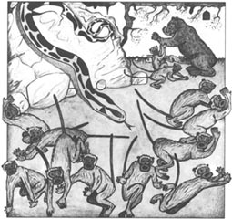
卡阿第一次张开嘴，发出了一阵长长的嘶嘶声。猴群突然安静了下来，一动不动。整个城市如一潭死水。
巴格拉挣扎着从水箱里爬了出来。“把那个孩子放出来，然后让我们走，”他说道，“我打不动了，猴子们会再次攻击我们的。”
“我不让他们动，他们是不会动的。”卡阿说道。
“我们真的很感谢你，卡阿。没有你，我们肯定不行。”巴鲁说道。
“很高兴能帮上忙。那孩子在哪儿？”卡阿问道。
“在这儿！就在这间屋子里，但是我出不去。”
“把他带走，”莫格利周围的蛇叫道，“他老是转来转去，他会踩着我们的。”
“往后退，孩子，”卡阿说道，“我来打破这堵墙。”
卡阿将自己沉重的身子抬起两米高，然后狠狠地拍打着墙面。五六次之后，墙上出现了一个洞，莫格利迅速从里面跳了出来。他跑向巴鲁和巴格拉，一把抱住了他们。
“你伤着了吗？”巴鲁问道。
“还行，”莫格利说，“但是班达洛把你们伤得不轻，我的朋友们。”
“这没什么，”巴鲁说道，“但你得好好谢谢卡阿。为了救你，他今晚可出了不少力呢。”
莫格利转过身，看见了大蟒的脑袋。
“看来这位就是人类的孩子了，”卡阿说道，“他和班达洛有些像，但又不一样。你要小心啊，孩子，等会儿我捕杀猴子时不要误伤了你。”
“你和我血脉相通，”莫格利回答道，“今晚你救了我，所以以后你要是饿的话，我捕获的东西就归你。”
“说得好。”巴鲁说道。
“你很勇敢，年轻人，”卡阿说道，“而且你说得不错。现在和你的朋友一起走吧。月亮马上就要落山了，不能让你看见接下来的事情。”
卡阿轻轻地滑到端坐成排的猴子面前，开始从容不迫地跳起舞来。他的脑袋左右摇晃，长长的身躯也随之摇摆，在他们眼前转着圈，每秒钟都姿态各异。
巴鲁和巴格拉呆在那里动弹不得，莫格利则不解地看着这一切。
“班达洛，”终于，卡阿用低沉的声音问道，“你们能动吗？”
“您不发话，卡阿，我们无法动弹。”
“靠我近一些。”卡阿说。
一排排的猴子走近卡阿，巴鲁和巴格拉也向前走了几步。
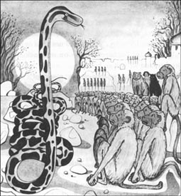
“再近点。”卡阿发出一阵嘶嘶声。他们又一起向前移动了几步。
莫格利把他的手放到巴鲁和巴格拉的身上，想把他们拉开。他们两个顿时清醒过来。
“把手放在我身上，莫格利，”巴格拉轻声说道，“否则我就会走回卡阿身边，一直走进他的嘴里。”
“老卡阿不过是跳跳舞而已，”莫格利说，“我们走吧。”说着他们三个便转身走进了森林。
“看蟒蛇跳舞是件危险的事儿，”巴鲁说道，“即便对我们来说也是这样。卡阿今晚可以饱餐一顿了。”
“好了，莫格利，”巴格拉生气地说，“巴鲁和我为了救你拼命战斗。猴子们则对我们又咬又扯又打。这一切都是因为你——这个人类的孩子——和班达洛一起玩耍。”
“的确如此，”莫格利伤心地说道，“我是个坏孩子。”
“根据‘森林法则’。我们必须对你进行惩罚。”巴格拉说道。看到莫格利平安归来，巴鲁就已经很高兴了，但他也不能违反“森林法则”。
“我应该受罚，”莫格利说，“我做错了。”
巴格拉打了他一下。对于一只黑豹来说这一下算是很轻的，可对于一个小孩子来说这一下很重。莫格利没有哭。
“好了，”巴格拉说，“跳到我的背上来，小兄弟，我们回家了。”
“森林法则”的好处之一就是，一旦你受到了惩罚，事情就算完结了。
4 The fight at the rock
4
The fight at the rock
Mowgli always went to the meetings of the Wolf-Pack, and there he learnt something new one day. If he looked hard at any wolf, the wolf could not meet his eyes and looked away. Mowgli thought this was funny; he did not understand that he was different from the wolves.
All the Jungle-People were his friends — but not Shere Khan, of course. Mother Wolf told him that the tiger wanted to kill him. 'One day you must kill Shere Khan. If you don't kill him, he will kill you.' But Mowgli forgot. He was only a boy, not a wolf.
Shere Khan still came often to that part of the jungle. Akela was older now and not so strong, and Shere Khan made friends with some of the younger wolves. Akela could not stop them, and Shere Khan began to make trouble for Mowgli. 'I hear you can't look into the man-cub's eyes,' he said, laughing, to the young wolves. And the young wolves began to get angry.
Bagheera, who had eyes and ears everywhere, knew something of this and told Mowgli. Mowgli laughed, but Bagheera went on, 'Open your eyes, Little Brother. Remember that Akela is old and he will not always be the leader of the Pack. Shere Khan has taught the younger wolves that a man-cub has no place with them. And soon you will be a man, not a man-cub.'
'But the wolves are my brothers. Why will they want to send me away?'
'Look at me,' said Bagheera, and Mowgli looked at him hard between the eyes. The big black cat turned his head away quickly. 'That is why,' he said. 'Not even I can look in your eyes. That is why they want to kill you. You are clever. You are a man.'
'I did not know these things,' said Mowgli quietly.
'Now listen. The day will soon come when Akela cannot kill his deer in the hunt. Then at the next meeting of the Pack the younger wolves will be against Akela and against you. When that time comes, go to the men's houses in the village and take some of their Red Flower. That will be a stronger friend to you than I or Baloo.'
The Red Flower was fire. All animals are afraid of it and do not call it by its name. 'I will get some,' said Mowgli. 'I will go and get it now, and keep it ready,' and he ran through the jungle to the village.
On his way he heard the sounds of the Wolf-Pack hunting a big deer. 'Show us that you are strong, Akela,' came the voices of the young wolves. 'Kill it!'
Mowgli stopped and listened, and he could hear that Akela did not kill the deer. 'So the time has come already,' he thought, and hurried to the village. He watched and waited, and soon he saw a child who was carrying a fire-pot. Mowgli jumped up, took the pot from him, and quickly ran away, back to the jungle. All that day he kept his fire alive with leaves and pieces of wood.
In the evening Tabaqui came and told him that the wolves wanted him at the meeting. Mowgli laughed, and went. When he arrived, he saw that Akela was not in his special place, on top of the rock, but beside it. That meant that another wolf could try to take Akela's place. Shere Khan was there, too, with all the younger wolves around him. Mowgli sat down, with the fire-pot between his legs. Bagheera lay beside him.
Shere Khan began to speak and Mowgli jumped up.
'Free People, is Shere Khan your leader? Does a tiger belong in the Wolf-Pack?'
'There is no wolf on the rock,' began Shere Khan, but the other wolves said, 'Let Akela speak.'
Akela looked up, old and tired. 'Free People, I have been your leader for many years. In all that time no wolf has died in the hunt. But this time I did not kill my deer. The Law of the Jungle says that you can kill me now, but the Law also says that you must come one by one.'
No one spoke. Akela was old, but nobody wanted to fight Akela alone.
Then Shere Khan spoke. 'Bah! This old wolf is not important. He will die soon. It is the man-cub who has lived too long. Give him to me.'
'A man! A man!' cried most of the younger wolves angrily. 'A man does not belong in the Wolf-Pack.'
'Mowgli is our brother,' said Akela. 'He has eaten our food. He has slept with us. He has done nothing wrong. Let him go to his own place.'
'He is a man,' cried Shere Khan and most of the wolves.
Mowgli stood up, the fire-pot in his hands. He was very angry, and very sad.
'You have said many times that I am a man. I was your brother, but I will not call you my brothers again. I will decide on my life or my death, not you. I am a man, and to show you, I have brought the Red Flower with me.'
He dropped the fire-pot on the ground and some of the fire fell out. The wolves were very afraid and moved back. Mowgli held a long piece of wood in the fire and the end began to burn brightly.
'You are the leader now,' said Bagheera softly. 'Help Akela. He was always your friend.'
'Good,' said Mowgli. He looked at the frightened wolves. 'I go from you to my people — the world of men. But first...' and Mowgli went to Shere Khan. 'This killer of cows wanted to kill me. This is what men do to killers of cows,' and he hit Shere Khan on the head with the burning stick. The tiger was very frightened.
'Go now,' said Mowgli to Shere Khan. 'The next time I come to this rock, it will be with your dead body. I tell you this also, my brothers, you will not kill Akela — because I do not want that. Akela is free to live.'
And Mowgli jumped at the young wolves with his burning stick and they all ran away. In the end there were only Akela, Bagheera, and a few older wolves left. Then something began to hurt Mowgli inside him and, for the first time in his life, tears ran down his face.
'What is it? What is it? Am I dying, Bagheera?'
'No, Little Brother. You are a man, and these are men's tears. But you must go — the jungle is closed to you now.'
'Yes,' said Mowgli. 'I will go to men. But first I must say goodbye to my mother.' And he went to the cave and cried on Mother Wolf's coat.
'You will not forget me?' Mowgli said to his wolf-family.
'Never,' said his wolf-brothers. 'Come to the foot of the hill when you are a man, and we will talk with you.'
'Come soon, little frog,' said Father Wolf, 'because your Mother and I are getting old.'
'I will surely come,' said Mowgli, 'and I will bring the coat of Shere Khan and put it on the Meeting Rock.'
And in the morning Mowgli went down the hill alone to meet those strange things that are called men.
deer n. a large grasseating wild animal that can run very fast and has wide branching horns 鹿
fire-pot n. a container for fire 火罐
belong v. to be in the right place or situation 应被放置在；应处在
one by one if people do something one by one, first one person does it, then the next, then the next etc. 一个一个地；依次地
bah int. to show disapproval of something 呸！（表示不赞同）
drop v. to stop holding or carrying something so that it falls 让（某物）落下
brightly adv. shining strongly or with plenty of light 光亮地；发光地
frightened adj. feeling afraid 受惊的；害怕的
coat n. the fur, wool, or hair that covers an animal's body（动物的）皮毛
岩石上的战斗
4．岩石上的战斗
莫格利每次都去参加狼族的聚会。有一天，他在那儿发现了一件新鲜事。如果他使劲盯着某只狼看，那只狼就会不敢正视自己，转而把目光移开。莫格利觉得这很有趣，他并不明白自己和狼群是不同的。
所有的森林居民都是他的朋友，当然不包括希尔汗。狼妈妈曾告诉他这只老虎想要杀死他。“将来你必须杀了希尔汗。如果你不杀掉他，他就会杀死你。”但是莫格利已经忘记母狼的话了。他毕竟只是个小孩子，而不是狼。
希尔汗还是经常来那片森林转转。现在的阿克拉已经老了许多，也不如以往强壮了。希尔汗和一些年轻的狼交上了朋友。阿克拉没法阻止他们，于是希尔汗便开始给莫格利制造麻烦。“我听说你们无法和那个人崽儿对视。”他边笑边对着年轻的狼群说。这些年轻的狼被激怒了。
巴格拉到处都有自己的耳目。当他听说了这件事后，便告诉了莫格利。莫格利笑了，巴格拉却继续说道：“放警惕些，小兄弟。你要记住，阿克拉老了，他不会永远领导狼族。希尔汗告诉年轻的狼们说人类的孩子在狼群中是没有地位的。而且很快你就会长成一个大人，而不再是个孩子了。”
“可是狼都是我的兄弟啊。为什么他们想要把我送走呢？”
“看着我。”巴格拉说道，于是莫格利紧紧盯住了他的双眼，这只黑色的大豹子很快将自己的脑袋转向一旁。“这就是原因，”他说，“连我都无法直视你的眼睛。这就是为什么他们想要杀死你。你很聪明，因为你是一个人。”
“我以前都不知道这些事情。”莫格利轻声说道。
“那么听着，一旦阿克拉连鹿也无法杀死，这一天很快就会来到。到那个时候，年轻的狼们就会在狼族的下一次聚会中反对阿克拉，还有你。到了那时，你就到人类居住的村子里去，然后从那里拿一些红花来。对你来说，那将是比我或是巴鲁都要强大的朋友。”
所谓的红花就是火。所有的动物都怕火，所以不愿意直呼其名。“我会的，”莫格利说道，“我现在就去拿一些来，做好准备。”说着，他穿过森林，朝村子奔去。
途中他听到狼族正在围攻一头巨大的鹿。“让我们看看你有多强壮，阿克拉，”年轻的狼群喊道，“杀掉它！”
莫格利停下脚步，侧耳倾听，他能听出来阿克拉并没有杀死那头鹿。“看来时候已到。”他一边想，一边匆匆赶到村子里。经过一番观察和等待，他很快便看到一个孩子手中拿着一个火罐。莫格利跳了起来，从他的手中夺过火罐，转身向森林的方向飞奔而去。那天，他用树叶和碎木头让火保持不灭。
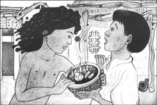
到了晚上，塔巴奎来了，告诉他狼群希望他参加聚会。莫格利大笑了一阵，向那儿走去。刚到聚会的地方，他就看到阿克拉没有坐在岩石顶上那个属于他的特别位置上，而是站在一旁。这意味着别的狼能够试着取代阿克拉了。希尔汗也在那里，年轻的狼们围在他的身旁。莫格利坐了下来，火罐就在他的双腿之间。巴格拉卧在他的身旁。
希尔汗开始说话，莫格利跳了起来。
“自由的人们，希尔汗是你们的领袖吗？一只老虎应该在狼族里吗？”
“现在岩石上没有狼。”希尔汗开口道，但是其他狼则说道：“让阿克拉讲话。”
阿克拉抬起头，显得苍老而疲惫。“自由的人们，我领导你们有好多年了。这些年中，没有一只狼在捕猎中死掉。但是这次我没有杀死本该由我杀死的鹿。根据‘森林法则’，你们现在可以杀死我了，但是你们得一个一个来，这也是法则规定的。”
没有人说话。阿克拉虽然老了，可还是没有人愿意和他单打独斗。
正在这时，希尔汗说话了。“呸！这只老狼无关紧要。他很快就要上西天了。倒是那个人类的小崽子，他活得太久了。把他给我。”
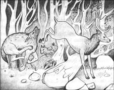
“人！人！”大部分年轻的狼生气地叫道，“人不属于狼族。”
“莫格利是我们的兄弟，”阿克拉说道，“他和我们同吃同住。他没有做什么错事。让他有自己的一席之地吧。”
“他是一个人。”希尔汗和大部分狼叫嚣着。
莫格利站了起来，手里拿着火罐。他怒火中烧而又满腹委屈。
“你们总说我是一个人。我曾是你们的兄弟，可是现在我将不再把你们当作兄弟。我将决定自己的生死，而不是由你们决定。我是人，为了证明这一点，我带来了红花。”
他将火罐摔在地上，一些火苗溅了出来。狼群非常害怕，往后退去。莫格利将一块长长的木头伸进火里，木头的一端顿时燃烧起来，发出明亮的光芒。
“现在你是领袖了，”巴格拉温和地说道，“帮帮阿克拉。他永远是你的朋友。”
“好的。”莫格利说道。他看着被吓呆了的狼群：“我将离开你们，回到我的同类那里，回到人类的世界。但是首先……”莫格利一边说，一边走向希尔汗，“这个只能杀牛的家伙想要杀死我。我要让你们看看人类是怎么对付杀牛贼的。”说着，他用正在燃烧的木棒朝希尔汗的脑袋上打去。老虎害怕极了。
“滚，”莫格利对希尔汗说道，“等下次我再到岩石这儿，我就会带着你的尸体一块儿来。还有你们，我的兄弟们，你们不能杀死阿克拉——因为我不希望这样。阿克拉可以自由地活下去。”
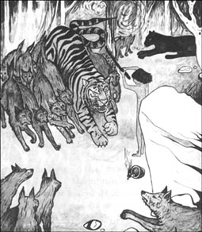
莫格利拿着正在燃烧的木棒冲进年轻的狼群，他们都四下逃散。最后只剩下阿克拉、巴格拉以及一些年长的狼。莫格利感到心里一阵剧痛，眼泪从脸上滑落下来，这还是他生平第一次落泪。
“这是什么东西？这是什么东西？我要死了吗，巴格拉？”
“不是的，小兄弟。你是一个人，这些是人类的眼泪。但是你必须走了——森林现在已经不属于你了。”
“我知道，”莫格利说道，“我将到人类那里去。但是我得先和我的妈妈道别。”他来到洞穴里，趴在狼妈妈的身上放声大哭。
“你们不会忘记我吧？”莫格利对他的狼家庭说道。
“永远不会，”他的那些狼兄弟们说，“等你成人后，你就来到山脚下，我们会和你说话。”
“尽早回来，小青蛙，”狼爸爸说道，“你妈妈和我已经老了。”
“我一定会回来，”莫格利说道，“我还要带来希尔汗的皮，然后把它放在聚会石上。”
第二天清晨，莫格利便独自一人下山，去见那些被称作人类的奇怪东西。
5 Tiger-Tiger
5
Tiger-Tiger
Mowgli knew that he had enemies now and he went far away. He ran until he came to a village in a place with many rocks and narrow valleys. Everywhere Mowgli could see cows and buffaloes. Some little boys were looking after the cows, but when they saw Mowgli, they shouted and ran away. Mowgli walked on until he came to the village.
He sat down by the gate. When a man came out of the village, Mowgli opened his mouth to show that he wanted food. The man ran back into the village and came back with a hundred other people. They all looked at Mowgli and saw the bite-marks on his arms and legs.
'Look,' said a man, 'those are the bite-marks of wolves. He is a wolf-child who has run away from the jungle.'
'He is a good-looking boy,' said one of the women. 'Messua, he looks like your little boy that was taken by the tiger.'
'Let me look,' said Messua. 'Yes, he is thin, but he looks like my son.'
'Take him to your house, Messua,' the villagers said. 'The jungle took your boy, and the jungle has given you this one back.'
The woman called Messua took Mowgli to her house and gave him milk and bread. This was Mowgli's first time in a house, and he did not like it. It felt like a prison.
'But I am a man now,' he thought, 'and I must do what men do. I must also learn to speak like men.' He knew all the many languages of the jungle, and so it was easy for him to learn the sounds of men. That first evening he learnt many words from Messua.
But that night he did not want to sleep inside the house. So he climbed out of the window, and went to sleep in a field near the village. Before he went to sleep, a soft grey nose touched his face. It was Grey Brother, the eldest of Mother Wolf's cubs.
'Wake, Little Brother,' he said. 'I bring news. Shere Khan has gone away. You burnt his coat with the Red Flower. But he says that, when he comes back, he will kill you.'
'I remember also what I said about Shere Khan,' said Mowgli. 'But it is good to have news. Will you always bring me news, Grey Brother?'
'Yes, Little Brother. But you will not forget that you are a wolf? You will not forget us when you are with men?'
'Never,' replied Mowgli. 'I will always remember that I love you all.'
* * *
For three months Mowgli learnt how to be like a man. He had to wear clothes, learn how to use money, and how to work in the fields. In the evenings he sat with the villagers under a great tree, while the men told stories about the jungle and the animals. Once, when Buldeo, the village hunter, told a story about a tiger, Mowgli had to hide his face because he was laughing. At the end he said, 'Buldeo's stories are stupid. He knows nothing about the jungle.'
The villagers did not like this, and after that they sent Mowgli out every day with the other boys, to look after the herds of cows and buffaloes while they ate. Mowgli enjoyed this work, and usually went on alone, with a big group of cows and buffaloes.
One day he saw Grey Brother under a tree near the jungle. 'Shere Khan has come back, but he is hiding for a while. Then he is coming to kill you,' said Grey Brother.
'Very good,' said Mowgli. 'Tell me when he comes. Meet me at the river, by the big dhak-tree with golden flowers. I will watch for you there every day.'
Day after day Mowgli went out with the herds, but there was nobody at the dhak-tree. Then at last the day came when Grey Brother was waiting for him.
'Shere Khan has waited for a month, and is hoping that you have now forgotten about him,' said the wolf. 'He's going to wait for you at the village gate this evening. But now he is hiding in the big dry ravine of the Waingunga. I met Tabaqui this morning —' here Grey Brother showed his teeth a little '— and before I broke his back, he told me all about Shere Khan's plan.'
'Has Shere Khan eaten today, or does he hunt empty?' The answer was life or death for Mowgli.
'He killed and ate this morning. And he has drunk, too.'
'How stupid he is!' said Mowgli. 'Does he think that I shall wait until he has slept?' He stood and thought for a while. 'The ravine of Waingunga! I can take the buffaloes round to the top end and chase Shere Khan down the ravine. After a meal, he cannot fight or climb easily. But I need a big group of cows at the bottom end of the ravine, to stop him escaping. Then we will catch him between the buffaloes and the cows. Can you help me, Grey Brother?'
'Not I alone,' said Grey Brother, 'but I have someone who will help me.' And the big grey head of Akela came out from the trees.
'Akela! Akela!' said Mowgli. 'I knew you would not forget me.' The two wolves ran here and there among the herd, and soon the cows and buffaloes were in two groups. Already, they were getting excited and dangerous. The other herd-boys, who were watching a long way away, ran back to the village with the news.
'Keep the cows together, Grey Brother,' called Mowgli. 'Drive them into the bottom end of the ravine and keep them there until we come down. Akela, you and I will take the buffaloes round to the top.'
They drove the buffaloes round in a big circle uphill. It took a long time because they did not want Shere Khan to hear them. At last Mowgli was ready. He stopped and shouted down the ravine.
'Shere Khan! It is I, Mowgli. It is time for our meeting!'
Mowgli rode on the back of Rama, the biggest of the buffaloes, and Akela chased the herd from behind. The buffaloes began to run down the ravine, faster and faster, and the ground shook under their heavy feet.
Shere Khan heard the noise and woke up. He knew what it was, and he began to run down the ravine. No tiger can hope to stand against a herd of buffaloes when they are moving fast. He looked for a way to escape, but the ravine was narrow, with high rocky walls. He had to go on, heavy with his dinner and his drink. Then he saw the cows at the bottom of the ravine, and turned. But it was too late. He fell under the feet of the buffaloes, and they ran over him like a river running down a mountain.
The buffaloes did not stop until they crashed into the herd of cows. Mowgli jumped off Rama's back and shouted to Akela and Grey Brother.
'It is done! Shere Khan is dead! He died the death of a dog, not a fighting tiger.'
Mowgli took his knife and started to cut the coat from Shere Khan's body. It was hard work. After an hour Mowgli was still working when suddenly he felt a hand on his back. It was Buldeo, the village hunter.
'Go and look after your buffaloes,' he cried angrily. 'I will take this tiger's coat. I can sell it for a hundred rupees, and you can have one rupee for yourself.'
'No,' said Mowgli. 'I need this coat.'
'Listen, boy!' shouted Buldeo. 'I am the village hunter, and I will take the coat, and keep all the money.'
Then Mowgli spoke to Akela in the wolf-language, and suddenly Buldeo was lying on his back on the ground with a big grey wolf standing over him.
'Buldeo,' said Mowgli, 'for a long time this tiger has wanted to kill me. But I have killed him.'
Buldeo was very afraid. Who was this boy, who could talk to wolves and kill tigers? 'Great King,' he said to Mowgli, 'I am an old man. I thought you were just a herd-boy. Let me go now, and I will go away.'
'Go, and peace go with you,' replied Mowgli, and he went on with his work.
It was nearly dark when at last he and the wolves pulled the great coat away from the tiger's body.
'Now we must hide this and take the cows and the buffaloes back to the village,' said Mowgli.
But when Mowgli came near the village, there was a crowd of people waiting for him at the gate. 'Go away, wolf-child!' they shouted. 'Go away, or we will kill you!'
Mowgli did not understand. Shere Khan — the tiger who killed cows and stole children — was dead, but people were angry with him. He turned away and looked up at the stars in the sky. 'No more sleeping in houses for me, Akela. Let us get Shere Khan's coat and go away.'
The moon climbed high in the sky, and the frightened villagers watched while Mowgli began to run across the fields, with the two grey wolves running at his side.
* * *
The moon was going down when Mowgli and the two wolves came to Mother Wolf's cave. 'The men do not want me, Mother,' called Mowgli. 'I have come home, and I have brought the coat of Shere Khan.'
Mother Wolf came out of the cave, very happy to see Mowgli again, and to know that Shere Khan was dead.
From the jungle came the deep voice of Bagheera. 'Little Brother, we are pleased to see you.'
Then Mowgli took the coat of Shere Khan and put it on the great rock at the wolves' meeting place. Akela lay on it and called, 'Look well, O Wolves!' And the Wolf-Pack came and looked, and saw that Shere Khan was dead.
'Now,' said Mowgli, 'I do not belong to the Wolf-Pack, or to the Man-Pack. I will hunt alone in the jungle.'
'And we will hunt with you,' said Grey Brother and the rest of Mother Wolf's cubs.
And Mowgli went away into the jungle and lived and hunted with his brothers, the wolves.
valley n. an area of land between two lines of hills or mountains, usually with a river flowing through it 谷；山谷
buffalo n. an African animal similar to a large cow with long curved horns 水牛
good-looking adj. having an attractive appearance 标致的；漂亮的
prison n. a large building where people are kept as a punishment for a crime 监狱
soft adj. not hard or firm, but easy to press（柔）软的
touch v. to put your hand or another part of your body on something or someone so that you can feel them（手或身体其他部位）触到；摸到
herd n. a group of animals of one kind that lives and feeds together（同一种类并一同栖息的）兽群
ravine n. a deep narrow valley with steep sides 深谷；峡谷
chase v. to quickly follow someone or something in order to catch them 追逐；追赶
escape v. to get away from a place when someone is trying to catch you or stop you leaving 逃走；逃离（某地）
herd-boy n. a boy who looks after a herd of animals 牧童
rupee n. the standard unit of money in India, Pakistan, and other countries 卢比（印度、巴基斯坦等国家的标准货币单位）
pleased adj. happy or satisfied 快乐的；高兴的
最后的决斗
5．最后的决斗
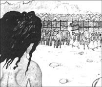
莫格利知道自己现在有了很多敌人，于是他决定远走他乡。他跑到一个村子前，这里遍布岩石和狭窄的山谷。放眼望去，到处是奶牛和水牛。一些小男孩正在放牛，但是当看到莫格利时，他们全都惊叫着跑开了。莫格利接着往前走到了村边。
他在村口坐了下来。正在这时，有个人从村子里走了出来，莫格利张开嘴巴表示他想要些吃的。那个人转身跑回到村子里，带着上百个人返回莫格利的身边。他们看着莫格利，发现他的胳膊和腿上有一些咬痕。
“看，”一个人说道，“那些伤痕是被狼咬的。他是一个从森林里跑出来的狼孩。”
“他长得挺漂亮，”一个女人说道，“梅苏阿，他看上去像你那个被老虎抢走的小男孩。”
“让我看看，”梅苏阿说道，“是啊，他虽然瘦，但是看上去挺像我儿子的。”
“把他带回你家吧，梅苏阿，”村民们说道，“森林带走了你的儿子，却又把这个孩子还给了你。”
那个叫梅苏阿的女人把莫格利带回了家，给了他一些牛奶和面包。莫格利是第一次待在屋子里，他不喜欢屋子，觉得像个监狱。
“可是我现在是人，”他想道，“人们做什么，我就必须做什么。我还必须学着像人一样说话。”他懂得森林里的所有语言，所以学会人类的发音对他来说一点儿也不难。第一晚，他就从梅苏阿那里学到了不少词语。
但是那天晚上他不愿意睡在屋里。于是他从窗户爬了出去，睡在村子附近的田野里。就在他刚要睡着的时候，一只柔软的灰色鼻子碰了碰他的脸。那是格雷哥哥的鼻子，他是狼妈妈最大的孩子。
“快醒醒，小兄弟，”他说道，“我给你带来了一些消息。希尔汗走了。你用红花烧坏了他的皮毛。但他说等他回来就会杀了你。”
“我也记得我说的那些有关希尔汗的话，”莫格利说道，“不管怎样，能听到一些消息总归不错。你会经常给我带些消息吗，格雷哥哥？”
“当然，我的小兄弟。但是你不会忘了自己是只狼吧？你和人在一起的时候，不会忘了我们吧？”
“永远不会，”莫格利回答道，“我爱你们，我一辈子都不会忘记。”
* * *
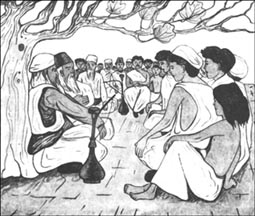
三个月里，莫格利一直在学习怎么做一个人。他不得不穿上衣服，学着使用钱币，以及如何干农活。到了晚上，他就和村民们一起坐在一棵大树下，听人们讲述有关森林和各种动物的故事。有一次，村里的猎手布尔迪欧讲了一个老虎的故事。莫格利不得不把自己的脸挡起来，因为他一直在笑。最后他说：“布尔迪欧在胡说，他对森林一点儿都不了解。”
听到这话，村民们很不高兴。从那以后，他们打发莫格利每天和其他男孩们一起，到村外去照顾奶牛和水牛吃草。莫格利倒是对这份工作自得其乐，经常独自一人赶着一大群牛。
有一天，他看见格雷哥哥站在森林附近的一棵树下。“希尔汗回来了，不过他现在躲了一阵子了。不久他就会来杀你。”格雷哥哥说道。
“很好，”莫格利说道，“他来的时候你告诉我一声，我们在河边那棵开满金黄花的达卡树下见面。我会每天都去看一下你。”
日子一天天过去了，莫格利每天赶着牛群出去，但是达卡树下始终空空如也。最后，格雷哥哥终于来到了树下。
“希尔汗等了一个月，认为你现在应该已经忘记他了，”格雷说道，“今晚他会在村口那里等着你。不过现在他就藏在瓦英乌加的一个已经干涸的峡谷里。今天早上我碰到了塔巴奎——”说到这里，格雷哥哥微微呲了呲牙齿，“——在我咬断他的脊梁之前，他告诉了我希尔汗的计划。”
“希尔汗今天吃过东西了吗？他是空腹上阵吗？”答案事关莫格利的生死。
“他早上抓到了一些东西，所以已经吃过了。他还喝了很多水。”
“这个蠢家伙！”莫格利说道，“他以为我会等到他睡够了才会行动吗？”他站在那里，想了一会儿，“瓦英乌加的峡谷！我可以赶着水牛群绕到山顶，然后把希尔汗赶到峡谷里。饱餐之后，他肯定无力战斗，也无力爬山。不过我还需要一大群奶牛守在谷底，好让他无法脱身。这样一来，我们就能用水牛和奶牛把他夹在中间。你愿意帮助我吗，格雷哥哥？”
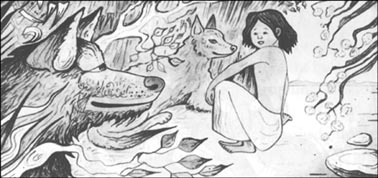
“就我一个可不行，”格雷哥哥说道，“但是有人可以帮我。”正说着，阿克拉那颗巨大的灰色脑袋从树林里探了出来。
“阿克拉！阿克拉！”莫格利说道，“我就知道你不会忘记我的。”两只狼在牛群中来回奔跑，很快奶牛和水牛就被分成了两群。牛群已经变得异常兴奋、一触即发了。其他的牧童远远地看到这一切，全都跑回村子里报告消息去了。
“别让奶牛跑了，格雷哥哥，”莫格利叫道，“把它们赶到峡谷的底部，让它们一直待在那里，直到我们下来。阿克拉，你和我一道把水牛赶到山顶。”
他们赶着水牛群，绕了一个大圈，爬到山顶。这花了很长时间，因为他们不想让希尔汗听到动静。终于，莫格利准备就绪。他停下来朝峡谷里大声喊起来。
“希尔汗！是我，莫格利！该是我们见面的时候了！”
莫格利骑在拉玛的背上——拉玛是牛群中最大的那头水牛。阿克拉则从后面驱赶着牛群。水牛开始向谷底冲去，越跑越快，沉重的脚步震得地面直抖。
希尔汗听到响声，醒了过来。弄明白是怎么一回事后，他开始朝着谷底跑去。水牛群一旦开始狂奔，任何老虎都休想抵挡得住。他想找条路逃走，但是峡谷很窄，而且两边都是高高的岩石。他不得不继续往前跑，肚子里的食物和水让他的脚步沉重。就在这时，他看到山谷里到处是奶牛。他想调转方向，可是已经太迟了。他倒在了一双双牛蹄下，牛群就像河水从山上冲下一样从他身上踏过。
直到水牛冲进奶牛群后，它们才停了下来。莫格利从拉玛的背上跳下来，对着阿克拉和格雷哥哥喊叫着。
“成功了！希尔汗死了！他死的时候就像是一条狗，而不是一头好战的老虎。”
莫格利拿出刀，开始剥希尔汗的皮。这项工作很费事。一个小时过去了，他还在忙着剥皮。正在这时，他突然感到有一只手搭在了自己的背上，原来是村里的猎手布尔迪欧。
“快去放牛，”他生气地叫嚷着，“这块虎皮归我了，这虎皮能卖到上百卢比，我可以给你一个卢比。”
“不，”莫格利说，“我需要这块虎皮。”
“听着，小子！”布尔迪欧叫道，“我是这村里的猎手，这块虎皮归我，卖的钱也全都归我。”
莫格利用狼的语言和阿克拉说了几句话，布尔迪欧便突然倒在地上，被一只巨大的灰狼踩在了脚下。
“布尔迪欧，”莫格利说，“这只老虎一直想杀死我。不过最终我杀死了他。”
布尔迪欧感到非常害怕。这个男孩究竟是谁？他为什么能够和狼对话，还能够杀死老虎呢？“伟大的王啊，”他对莫格利说道，“我是个老头了。我以为你不过是个牧童。放我走吧，我马上就滚。”
“走吧，愿你平安。”莫格利回答道，说着他便继续手头的活儿。
天快黑的时候，他和两只狼终于把巨大的虎皮从希尔汗的身上剥了下来。
“现在我们必须把这个先藏起来，然后把牛群赶回村子去。”莫格利说。
但是快要到村子的时候，莫格利发现村口有一群人正在等着他。“快滚，你这个狼孩！”他们叫道，“快滚，否则我们就杀了你！”
莫格利有些糊涂了。杀牛偷孩子的老虎希尔汗死了，可是人们却怒火中烧。他转过身去，仰望着星空。“我不会再回到屋子里睡觉了，阿克拉。我们带上希尔汗的皮离开这里吧。”
月亮高高地挂在天空，惊恐的人们看着莫格利跑过田野，旁边跟着两只灰狼。
* * *
等到莫格利和两只狼来到狼妈妈的洞穴时，月亮已经下山了。“人们不欢迎我，妈妈，”莫格利说道，“我回来了，还带来了希尔汗的虎皮。”
狼妈妈走出洞穴，看到莫格利回来了，又看到希尔汗已经死了，感到非常高兴。
森林里传来巴格拉低沉的声音：“小兄弟，看见你真高兴。”
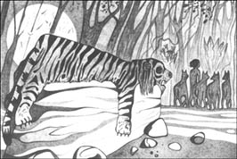
莫格利把希尔汗的虎皮放在狼群聚会处的大石头上。阿克拉卧在上面说：“大家看仔细！”狼族走上前来，看到希尔汗已经一命呜呼了。
“现在，”莫格利说道，“我既不属于狼族，也不属于人类。我将独自一人在森林打猎。”
“我们会和你一起打猎。”格雷哥哥和狼妈妈的其他孩子一块儿说道。
于是，莫格利和他的狼兄弟走进森林。从此以后他们便一起生活，一起打猎。
ACTIVITIES: Before Reading
ACTIVITIES
Before Reading
1．What do you know about jungles? Choose the best answers to these questions.
1) What is the weather like in a jungle?
a It rains a lot.
b It never rains.
c It snows in winter.
d It is very cold.
e It is very hot.
f It is warm, but not hot.
2) Which of these countries have jungles?
a Italy
b Brazil
c Canada
d Spain
e India
f Japan
2．Which of these things do you find in jungles? Underline the most usual things.
| beaches | elephants | rivers |
| birds | flowers | sheep |
| buses | fruit | shops |
| chickens | gardens | snakes |
| cinemas | hills | tigers |
| cows | monkeys | trees |
3．Read the story introduction on the first page of the book, and the back cover. How much do you know now about the story?
Tick one of the boxes for each sentence.
1) The jungle is in Southern India.
YES □／NO □
2) Mowgli is a wolf-cub.
YES □／NO □
3) Mother Wolf wants to keep the baby.
YES □／NO □
4) The baby is afraid of Mother Wolf.
YES □／NO □
5) Mowgli dies while he is still a baby.
YES □／NO □
6) A bear and a panther are his teachers.
YES □／NO □
7) Shere Khan the tiger is Mowgli's friend.
YES □／NO □
8) Mowgli grows up with his wolf family.
YES □／NO □
4．What will happen in this story? Can you guess? Tick one of the boxes for each sentence.
1) When Mowgli grows up, some of the wolves want to kill him.
YES □／NO □
2) Mowgli leaves the jungle and goes to live in a village.
YES □／NO □
3) He goes to school and learns to read and write.
YES □／NO □
4) Shere Khan the tiger goes away and forgets about Mowgli.
YES □／NO □
5) Mowgli kills Shere Khan.
YES □／NO □
6) Shere Khan kills Mowgli.
YES □／NO □
ACTIVITIES: While Reading
ACTIVITIES
While Reading
1．Read Chapter 1. Who said these words in the chapter?
1) 'The man's cub belongs to us.'
2) 'I will have this man-cub one day, you thieves!'
3) 'I will call him Mowgli, the frog.'
4) 'Let him run with the Pack. I myself will teach him.'
5) 'It is bad to kill a man-cub.'
6) 'Take him away, and teach him well.'
2．Read Chapter 2. Here are some untrue sentences about it. Change them into true sentences.
1) Mowgli always loved his lessons with Baloo.
2) The Monkey-People were quiet and clean.
3) The monkeys carried Mowgli away to a cave.
4) Baloo and Bagheera asked Chil the kite for help.
5) Bagheera called Kaa the python an 'old yellow fish'.
6) Mowgli wanted to stay with the Monkey-People.
3．Read Chapter 3. Choose the best question-word for these questions, and then answer them.
Who/What/Where/Why
1) ... attacked the monkeys first?
2) ... did Kaa the python go?
3) ... did Mowgli hear in the dark room?
4) ... did Mowgli tell Bagheera to get into the water?
5) ... made a hole in the wall?
6) ... did Kaa do in front of the monkeys?
7) ... was Bagheera angry with Mowgli?
4．Read Chapter 4, and then complete these sentences with the best word.
1) The animals could not look into Mowgli's ______.
2) One day Akela could not kill his ______ in the hunt.
3) The wolves said that a man did not ______ in the Wolf-Pack.
4) Mowgli hit Shere Khan with a ______ stick.
5) Mowgli knew he had to go to the world of ______.
5．Before you read Chapter 5, can you guess what will happen? Tick one box for each sentence.
1) Mowgli forgets all about his wolf-family.
YES □／NO □
2) He learns the language of men.
YES □／NO □
3) He makes friends with other boys.
YES □／NO □
4) He stays in the village for the rest of his life.
YES □／NO □
5) Shere Khan makes a plan to kill Mowgli.
YES □／NO □
6) The people of the village help Mowgli to kill Shere Khan.
YES □／NO □
ACTIVITIES: After Reading
ACTIVITIES
After Reading
1．Match the names with the animals in this story.
| Tabaqui | monkeys |
| Shere Khan | the leader of the Wolf-Pack |
| Baloo | a python |
| Bagheera | a kite |
| Akela | a jackal |
| Bandar-log | a wolf |
| Chil | a tiger |
| Kaa | a bear |
| Grey Brother | a panther |
2．Who do these sentences describe? Fill in the names.
1) ______ teaches the Law of the Jungle to the wolf-cubs.
2) ______ is brown and yellow, and ten metres long. His dance is dangerous to watch.
3) ______ are noisy and dirty. They make many plans and forget them five minutes later.
4) ______ has green eyes and is as black as the night. He is clever, strong, and dangerous.
5) ______ kills cows and steals children. He is afraid of fire.
6) ______ eats anything, and makes a lot of trouble.
3．How did Mowgli kill Shere Khan the tiger? Put these parts of sentences in the right order to make a paragraph of four sentences.
1) They put the cows and the buffaloes into two groups
2) he made a plan
3) while Mowgli and Akela took the buffaloes to the top of the ravine.
4) One day Grey Brother came to tell Mowgli that
5) and Grey Brother drove the cows into the bottom end of the ravine.
6) Shere Khan was hiding in the ravine of the Waingunga.
7) and asked Grey Brother and Akela to help him.
8) He kept the cows there
9) When Mowgli heard this,
4．Now finish the story of the death of Shere Khan. Use the words below to complete the passage.
because /so / so / when / and / and / but
______ the buffaloes began to run down the ravine, Shere Khan heard the noise ______ woke up. He too began to run ______ he could not run fast ______ he was heavy with his dinner and his drink. The ravine was high and narrow ______ he could not climb out of it, ______ he could not get past the cows at the bottom. There was no way for him to escape, ______ he died under the feet of the buffaloes.
5．Here is a new illustration for the story. Find the best place in the story to put the picture, and answer these questions.
The picture goes in Chapter ______.
1) Who are the characters in the picture?
2) What did the man want to do?
3) Why is he frightened?
Now write a caption for the illustration.
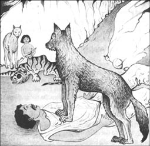
Caption: _______________________.
6．In each of these groups of words from the story, one word does not belong. Which word is it, and can you explain why?
1) run, climb, swim, jump, think
2) cow, deer, kite, buffalo, jackal
3) sun, cloud, moon, cave, star
4) bite, hiss, whisper, roar, shout
5) hill, ravine, mountain, valley, garden
6) brother, hunter, father, sister, mother
7) angry, frightened, tired, tall, hungry
7．Many people have written stories about animals who can talk. Look at these ideas. Do you agree (A) or disagree (D) with them?
1) Animals can't talk.
2) Perhaps animals can talk, but humans don't understand their language.
3) Perhaps wolves can talk to wolves and monkeys to monkeys, but wolves can't talk to monkeys.
4) Animals can't speak like humans, but they use a language of things like sounds and smells.
5) Some animals are cleverer than humans.
8．Which animal did you like best in The Jungle Book? And which animal do you like best in real life? Explain why.
封底
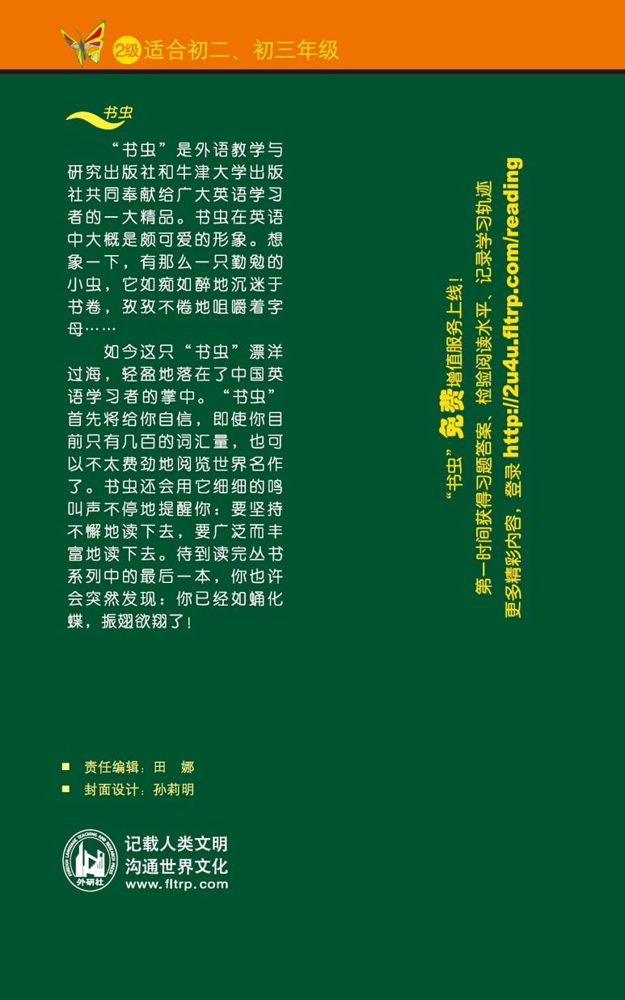